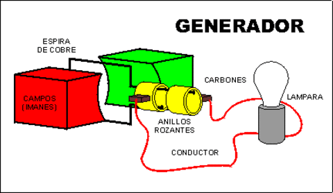

LOS OPERADORES ELECTRICOS.
Pues se conoce como sistema eléctrico en un conjunto dinamicamente relacionados permiten generar, conducen o reduce corriente eléctrica.Como en un interruptor donde pasa la corriente eléctrica, en todo el sistema de energia.
TIPOS DE OPERADORES ELECTRICOS.
- Son los que trabajan con electricidad son donde aparecen enchufes , como lavadoras, televisores, computadores, etc.
- Los que trabajan con pilas esas funcionan con baterías o pilas muchos de ellos se puede conectar a la red eléctrica para economizar muchos artefactos como teléfonos, celulares , tables etc , utilizan pilas recargables .
COMPONENTES DE UN SISTEMA ELECTRICO
Interruptor : Permite manipular el poso de la corriente.
Generador : genera energía eléctrica como el cargador de pilas de cargadores.
Conector : Permite una correcta coneccion como el cable eléctrico
Receptor : Transforma la energía eléctrica como el ventilador , plancha.
Fusible : Se Encarga de reservar la instalación ante el riesgo.

CORRIENTE ELECTRICA
La electricidad se manifiesta de la materia producida por el átomo y sus pequeñas partículas pequeñas llamadas electrones y protones son demasiadas pequeñas.

CORRIENTE CONTINUA
Esta se caracteriza por sus electrones que viajan a lo largo del conducto en una misma y única dirección.

CORRIENTE ALTERNA
Esta se caracteriza por el desplazamiento de los electrones cada cierto periodo de tiempo ninguna de las terminales del circuito puede ser nombrada como positivo o negativo.
TENSION Y VOLTAJE
Es la diferencia de potencial generada entre , los extremos de un componente o dispositivos eléctricos. También se puede decir se puede decir que es la energía capaz de poner en movimiento en los electrones libres de un conductor o semiconductor.

ELECTRICIDAD HIDRAULICA
Es la reacción del movimiento del agua que esta retenido en embalses a gran altura que permite que haya una gran energía potencial. Es un dado se deja caer hasta un nivel inferior , esta energía se convierte en energía cinética y , posteriormente , en energía eléctrica en la central hidroeléctrica.

ELECTRICIDAD POR REDACCION QUIMICA
Las sustancias químicas pueden combinarse con ciertos metales para iniciar una actividad química hay transferencia de electrones produciéndose cargas eléctricas , el proceso se basa en el principio de la electroquimica .

CALCULOS EN LOS CIRCUITOS ELECTRICOS
Intensidad:
También Dominada Intensidad es el flujo de electrones libres atraves de un conductor o semiconductor en un sentido.La unidad de medida de este parámetro es el imperio (A) .
Ley de ohm:
Es básicamente la resistencia eléctrica es un circuito es muy importante, para determinar la intensidad del flujo de electrones, se habla descubierto hace tiempo que a la igualdad de otras circunstancias, es un incremento en la resistencia de un circuito se acompaña por una disminución de la corriente.
Potencia Eléctrica:
Es la velocidad a las que se consume la energía también se puede definir potencia como la energía desarrollada o consumida en una unidad de tipo expresada en la formula.
Calculo De Potencias:
Consume un dispositivo conectado en un circuito eléctrico que se multiplica el valor de la tensión el volt (v). Se aplica el valor de la intensidad ( I) de la corriente que lo recorre.
Corriente Frotamiento:
Esta carga pasa cuando se trata de un cuerpo negativo con un positivo.
La Electricidad:
Es un método que produce corriente por la cual las personas tenemos luz , energía y no va en lo material si no también en lo corporal por medio de la electricidad podemos hacer muchas cosas para vivir y conocer cosas.
Comportamientos Digitales:
1. Respeto utilizo las tic respetando a los otros como respetándome y asiéndome respetar.
2. Libertad ejerzo mi derecho a la libertad y respeto a la de los demás.
3. Identidad hago uso de mi identidad de manera segura en mi interacción con otros en los ambientes tecnológicos.
Circuitos:
Es el programa en el que desarrollamos nuestras mentes consiste en el que podemos hacer cálculos con la ley de ohm para ser un buen circuito electrónicos para ver los ohmios y poder hacer los ejercicios ya se para sacar el voltaje la intensidad la resistencia o la potencia o ya sea el que nos indique cual de los 4 podemos hacer.
Prefijos Del Sistema Internacional:
Nos sirven para hacer circuitos ya sea cambiando el numero del voltaje o para sacar el micro o el mili y hacíamos la convercion.

PODCAST SOBRE LOS OPERADORES ELECTRICOS.
PODCAST SOBRE LAS ESTRUCTUTRAS ALGORITMICAS SECUENCIALES Y REPETITIVAS.
GIF, EJEMPLO DE ELECTRONICA BÁSICA Y DISEÑO DE CIRCUITOS.

VIDEO SOBRE ESTRUCTURAS ALGORITMICAS SECUENCIALES Y REPETITIVAS.